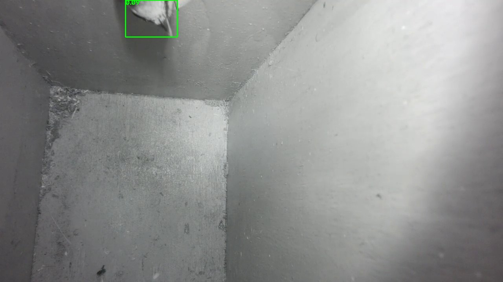

Detection
One small Python script watches the stream, notices movement, asks an object-detection model whether a bird is in the picture and reports to Home Assistant.
How it decides
- Motion. The picture is shrunk and blurred, compared to a slowly moving background, and counts as "motion" when about 1 % of the pixels change noticeably.
- Bird check. While there is motion, a small YOLO model looks at the whole picture about once a second, at 1280 pixels. Since 11 November this is a model trained on pictures from this box (see A model trained on the residents); before that it was a general-purpose model. Anything scoring 0.30 or more counts as a bird. Frames smaller than 40 pixels are ignored (see What changed).
- Messages.
motionat most once per minute.occupiedafter three hits within 20 seconds, and only if at least one of them came from the model.emptyafter 90 seconds without a hit. - Pictures. At most one picture every 3 seconds is saved, labelled
birdornobird, the last 1500 are kept. A second copy without the green frame goes into a separate folder, for the next round of training. - Post. When the box turns empty, the best picture of that visit is published as an incident report (see The reports).
Why motion still counts
A bird in a real box is often visible only as a beak or a head at the top edge of the picture, and a general-purpose model misses that much of the time. The camera sits inside the box, so movement there is almost always a bird. The script therefore counts either a model hit or motion as a hit.
That alone produced false alarms: insects at the lens, light changes, shadows at dusk. Since 28 October motion alone is no longer enough. Three hits still make a visit, but the box is only reported as occupied if the model confirmed a bird at least once within the same 20 seconds. Otherwise the decision is held back. In the weeks since, every held-back case turned out to be an insect or a change of light, and no real visit was lost: the model always caught up within a few seconds.
No usage data
Libraries like Ultralytics can send usage statistics. The script switches this off in code (settings.update({"sync": False})). It is also worth turning off once in the shell, including the optional integrations:
yolo settings sync=False clearml=False comet=False dvc=False mlflow=False raytune=FalseThe model file is downloaded once, or trained locally, and then runs on the Pi. Nothing is sent anywhere.
Installation
mkdir -p ~/nestbox ~/tmp
python3 -m venv ~/nestbox/venv
TMPDIR=~/tmp ~/nestbox/venv/bin/pip install --no-cache-dir ultralytics opencv-python-headless requestsUse opencv-python-headless, not opencv-python; the latter needs graphics libraries a headless Pi does not have. The TMPDIR trick is needed because /tmp is a small RAM disk on the Pi and large installs can fill it.
A model trained on the residents
Until 11 November the box used a general-purpose model, one that knows 80 everyday things, among them "bird". It is good at a pigeon on a lawn and poor at a tit seen from above, half cut off at the edge of a dark wooden box. On a set of 26 saved pictures that definitely show a bird, it found 9.
So the box was taught to recognise its own visitors. 143 pictures from this box were sorted by hand, 95 with a bird and 48 without. Drawing the frames was quick, because the box never moves: the difference to an empty picture proposes a frame, and all that is left is to confirm or correct it.
The split between training and testing was made by visit, not by picture. Pictures from the same visit look nearly identical, and having them on both sides would have made the result look far better than it is. 19 visits went into training, 11 were held back. Training ran on a laptop, about an hour, starting from the same small model as before.
| Threshold | General model | Own model |
|---|---|---|
| 0.10 | 10 of 26 birds, 0 false alarms | 26 of 26, 0 false alarms |
| 0.13 | 9 of 26 birds, 0 false alarms | 26 of 26, 0 false alarms |
| 0.25 | 5 of 26 birds, 0 false alarms | 26 of 26, 0 false alarms |
On the held-back pictures the weakest real bird scored 0.45 and the strongest empty picture 0.03, with nothing in between. Hence the threshold of 0.30, with room on both sides. The pictures of insect shadows at night, the ones that caused the false alarms in October, all stayed at 0.03 or below.
Two things got better that were not expected. The new model finds a bird seen from behind, a wing from above, even a few tail feathers at the bottom edge, all of which the old one missed completely. And it does so without the extra look at the top strip of the picture, which the old setup needed, so a check now takes 1.1 instead of 1.5 seconds on the Pi.
The reports
When a visit ends, the box picks the picture with the highest score from that visit, the copy without the green frame, and publishes it with a short caption. The captions are picked at random from a handful of templates, in the same deadpan register as the field guide. Date, time and duration are filled in. Nothing else about the visit leaves the Pi, and the pictures carry no metadata at all.
It posts at most once per visit, with a ten minute gap, and only when the model actually saw a bird. A false alarm never becomes a post.
The script
This is the whole thing, as it runs now. Only the caption templates are shortened to one example each, so the reports keep their element of surprise.
#!/usr/bin/env python3
"""Nest box watch: motion -> bird check -> message to Home Assistant -> post."""
# SPDX-License-Identifier: MIT
# Copyright (c) 2026 snoth0x53
import os
import random
import sys
import threading
import time
from datetime import datetime
from pathlib import Path
os.environ["OPENCV_FFMPEG_CAPTURE_OPTIONS"] = "rtsp_transport;tcp"
import cv2
import requests
from ultralytics import YOLO, settings
settings.update({"sync": False}) # never send usage data
# ---------- Settings ----------
RTSP = "rtsp://127.0.0.1:8554/nestbox"
HA_WEBHOOK = os.environ.get("HA_WEBHOOK", "") # e.g. http://<home-assistant>:8123/api/webhook/<secret-id>
MODE = "both" # what counts as a hit for "occupied": "model", "motion" or "both"
MOTION_FRAC = 0.01 # share of changed pixels that counts as motion
PIXEL_DIFF = 25 # brightness difference per pixel
BIRD_CONF = 0.30 # minimum confidence for "bird"
MIN_CONF = 0.05 # below this nothing is shown at all
CHECK_IMGSZ = 1280 # image size for the bird check
MIN_BOX = 40 # ignore frames whose shorter side is below this many pixels (dust speck)
MODEL_REQUIRED = True # "occupied" only after at least one model hit
HITS_NEEDED = 3 # this many hits ...
HIT_WINDOW = 20 # ... within this many seconds = occupied
EMPTY_AFTER = 90 # seconds without a hit = empty
CHECK_EVERY = 1.0 # bird check while there is motion (seconds)
CHECK_EVERY_OCC = 5.0 # bird check while occupied (a bird may sit still)
MOTION_NOTIFY_EVERY = 60 # seconds between two motion messages
SNAP_EVERY = 3 # seconds between two saved pictures
SNAP_DIR = Path.home() / "nestbox" / "snaps"
MAX_SNAPS = 1500
# Second copy without the green frame, for the next round of training. None = off.
SNAP_RAW_DIR = Path.home() / "nestbox" / "snaps_raw"
MAX_SNAPS_RAW = 1500
# Own model, trained on pictures from this box. Falling back to the general model
# means setting MODEL_PATH to "yolov8n.pt" and BIRD_CLASS to 14.
MODEL_PATH = str(Path.home() / "nestbox" / "nestbox-model.pt")
BIRD_CLASS = 0 # own model: class 0 = "bird" (general COCO model: 14)
# Mastodon: one post per visit, triggered when the box turns empty.
# The token comes from the environment, never from this file.
MASTODON = True
MASTODON_SERVER = "https://mastodon.social"
MASTODON_TOKEN = os.environ.get("MASTODON_TOKEN", "")
MASTODON_VISIBILITY = "public"
MASTODON_LANGUAGE = "en"
MASTODON_TAGS = "#birds #nestbox"
MASTODON_GAP = 600 # seconds between two posts
MASTODON_ALT = ("Black-and-white infrared photograph taken inside a wooden nest box, "
"looking down from the roof. A bird is visible in the box.")
# {date}, {time} and {duration} are filled in.
# One template of each kind is shown here; the running version has a handful per
# list, so the reports do not repeat themselves. Write your own.
MASTODON_TEXTS = [
"Incident report, {date}. A bird was observed inside the box at {time}. It stayed {duration} and left without comment.",
]
MASTODON_TEXTS_SHORT = [ # visits under 10 seconds
"Incident report, {date}. Brief intrusion at {time}, {duration}. The visitor reconsidered.",
]
MASTODON_TEXTS_LONG = [ # visits over 2 minutes
"Incident report, {date}. Extended stay at {time}, {duration}. No lease has been signed.",
]
MASTODON_TEXTS_RARE = [ # turn up now and then, see MASTODON_RARE_SHARE
"Incident report, {date}. Entry recorded at {time}. The device remained {duration} and did not identify its operator.",
]
MASTODON_RARE_SHARE = 0.2 # 0.0 = never, 1.0 = always
# ------------------------------
latest = {"frame": None, "ok": False}
MONTHS = ["January", "February", "March", "April", "May", "June",
"July", "August", "September", "October", "November", "December"]
def log(msg):
print(f"{datetime.now():%H:%M:%S} {msg}", flush=True)
def reader():
"""Reads the stream continuously and keeps only the newest frame."""
while True:
cap = cv2.VideoCapture(RTSP, cv2.CAP_FFMPEG)
if not cap.isOpened():
log("Stream not reachable, retrying in 5 s")
time.sleep(5)
continue
log("Stream connected")
while True:
ok, frame = cap.read()
if not ok:
break
latest["frame"] = frame
latest["ok"] = True
cap.release()
latest["ok"] = False
log("Stream lost, reconnecting")
time.sleep(2)
def notify(state, extra=""):
log(f"=== Nest box: {state.upper()}{extra.rstrip()} ===")
if not HA_WEBHOOK:
return
try:
r = requests.post(HA_WEBHOOK, json={"state": state, "time": datetime.now().isoformat()}, timeout=5)
if not r.ok:
log(f"Home Assistant answered {r.status_code}")
except Exception as e:
log(f"Home Assistant not reachable: {e}")
def duration_text(sec):
"""45 seconds, 2 minutes 14 seconds, 11 hours 3 minutes (roosting in winter)."""
whole = int(round(sec))
h, rest = divmod(whole, 3600)
m, s = divmod(rest, 60)
parts = []
if h:
parts.append(f"{h} hour" + ("s" if h != 1 else ""))
if m:
parts.append(f"{m} minute" + ("s" if m != 1 else ""))
if s and not h:
parts.append(f"{s} second" + ("s" if s != 1 else ""))
return " ".join(parts) or "0 seconds"
def post_text(start, duration_sec):
"""Builds the caption from a random template."""
if MASTODON_TEXTS_RARE and random.random() < MASTODON_RARE_SHARE:
templates = MASTODON_TEXTS_RARE
elif duration_sec < 10:
templates = MASTODON_TEXTS_SHORT or MASTODON_TEXTS
elif duration_sec > 120:
templates = MASTODON_TEXTS_LONG or MASTODON_TEXTS
else:
templates = MASTODON_TEXTS
text = random.choice(templates).format(
date=f"{start.day} {MONTHS[start.month - 1]} {start.year}",
time=f"{start:%H:%M}",
duration=duration_text(duration_sec),
)
return f"{text}\n\n{MASTODON_TAGS}".strip()
last_post = 0.0
post_lock = threading.Lock()
def mastodon_send(picture, text, visibility=None):
"""Uploads the picture and publishes the post. Returns (ok, message)."""
head = {"Authorization": f"Bearer {MASTODON_TOKEN}", "Accept": "application/json"}
try:
with open(picture, "rb") as f:
answer = requests.post(f"{MASTODON_SERVER}/api/v2/media", headers=head,
files={"file": (os.path.basename(picture), f, "image/jpeg")},
data={"description": MASTODON_ALT}, timeout=60)
if answer.status_code not in (200, 202):
return False, f"picture rejected ({answer.status_code})"
media = answer.json().get("id")
if not media:
return False, "no media id returned"
# 202 means: still being processed, wait a little
for _ in range(20):
if answer.status_code == 200:
break
time.sleep(3)
answer = requests.get(f"{MASTODON_SERVER}/api/v1/media/{media}", headers=head, timeout=30)
data = {"status": text, "media_ids": [media],
"visibility": visibility or MASTODON_VISIBILITY, "language": MASTODON_LANGUAGE}
head2 = dict(head)
head2["Idempotency-Key"] = f"nestbox-{os.path.basename(picture)}"
answer = requests.post(f"{MASTODON_SERVER}/api/v1/statuses", headers=head2, json=data, timeout=60)
if answer.status_code != 200:
return False, f"post rejected ({answer.status_code})"
return True, answer.json().get("url", "published")
except Exception as e:
return False, f"{type(e).__name__}: {e}"
def mastodon_post(picture, start, duration_sec):
"""Checks the conditions and sends in a thread of its own."""
global last_post
if not MASTODON:
return
if not MASTODON_TOKEN:
log("Mastodon: no token set, nothing posted")
return
if not picture or not Path(picture).exists():
log("Mastodon: no picture for this visit, nothing posted")
return
with post_lock:
if time.time() - last_post < MASTODON_GAP:
log("Mastodon: too soon after the last post, nothing posted")
return
last_post = time.time()
text = post_text(start, duration_sec)
def work():
ok, message = mastodon_send(picture, text)
log(("Mastodon: published " if ok else "Mastodon: ") + str(message))
threading.Thread(target=work, daemon=True).start()
class Visit:
"""Keeps track of hits, decides occupied/empty and collects values."""
def __init__(self):
self.occupied = False
self.hits = [] # times of all hits (model or motion)
self.bird_hits = [] # times of the model hits
self.last_hit = 0.0
self.best = 0.0 # best model value since the visit started
self.birds = 0 # number of model hits since it started
self.start = 0.0
self.held = False # "occupied" was held back and already logged
self.picture = None # best saved picture of this visit (no frame drawn)
self.picture_value = 0.0
self.last_visit = None # details for the Mastodon post
def values(self):
plural = "" if self.birds == 1 else "s"
return f"best value {self.best:.2f}, {self.birds} hit{plural}"
def check(self, now, motion, best, n_birds):
"""Evaluates one bird check. Returns a list of (kind, text)."""
out = []
self.hits = [t for t in self.hits if now - t <= HIT_WINDOW]
self.bird_hits = [t for t in self.bird_hits if now - t <= HIT_WINDOW]
if not self.occupied and not self.hits:
self.best, self.birds, self.start, self.held = 0.0, 0, now, False
self.picture, self.picture_value = None, 0.0
self.best = max(self.best, best)
if n_birds:
self.birds += 1
self.bird_hits.append(now)
hit = (n_birds > 0 and MODE in ("model", "both")) or (motion and MODE in ("motion", "both"))
if hit:
self.hits.append(now)
self.last_hit = now
if not self.occupied and len(self.hits) >= HITS_NEEDED:
if MODEL_REQUIRED and not self.bird_hits:
if not self.held:
self.held = True
out.append(("held", f"occupied held back, no model hit, best value {self.best:.2f}"))
else:
self.occupied = True
out.append(("occupied", f" {self.values()}"))
return out
def keep_picture(self, path, value):
"""Keeps the picture with the highest model value of this visit."""
if path and value > self.picture_value:
self.picture, self.picture_value = path, value
def empty(self, now):
"""Returns the extra text for "empty" once it is time, otherwise None."""
if self.occupied and now - self.last_hit > EMPTY_AFTER:
duration = max(0.0, self.last_hit - self.start)
text = f" {self.values()}, visit about {duration_text(duration)}"
self.last_visit = {
"start": datetime.fromtimestamp(self.start),
"duration": duration,
"picture": self.picture,
}
self.occupied = False
self.hits = []
self.bird_hits = []
return text
return None
def tidy(folder, keep):
"""Keeps only the newest pictures."""
for old in sorted(folder.glob("*.jpg"))[:-keep]:
try:
old.unlink()
except OSError:
pass
def save_snap(frame, label, boxes=None):
"""Saves the picture with the green frame and, if switched on, a copy without."""
stamp = f"{datetime.now():%Y%m%d-%H%M%S}"
SNAP_DIR.mkdir(parents=True, exist_ok=True)
img = frame.copy()
for (x1, y1, x2, y2, c) in boxes or []:
cv2.rectangle(img, (int(x1), int(y1)), (int(x2), int(y2)), (0, 255, 0), 2)
cv2.putText(img, f"{c:.2f}", (int(x1), max(int(y1) - 5, 12)), cv2.FONT_HERSHEY_SIMPLEX, 0.6, (0, 255, 0), 2)
framed = SNAP_DIR / f"{stamp}-{label}.jpg"
cv2.imwrite(str(framed), img)
tidy(SNAP_DIR, MAX_SNAPS)
if SNAP_RAW_DIR is None:
return str(framed)
try:
SNAP_RAW_DIR.mkdir(parents=True, exist_ok=True)
raw = SNAP_RAW_DIR / f"{stamp}-{label}.jpg"
cv2.imwrite(str(raw), frame)
tidy(SNAP_RAW_DIR, MAX_SNAPS_RAW)
return str(raw)
except Exception as e:
log(f"picture without frame not saved: {e}")
return str(framed)
def main():
threading.Thread(target=reader, daemon=True).start()
log(f"Loading bird model {MODEL_PATH} ...")
if "/" in MODEL_PATH and not Path(MODEL_PATH).exists():
log(f"Model not found: {MODEL_PATH}")
sys.exit(1)
model = YOLO(MODEL_PATH)
log(f"Mode: {MODE}, model required: {MODEL_REQUIRED}, threshold {BIRD_CONF:.2f}")
if MASTODON:
log("Mastodon: " + ("token set" if MASTODON_TOKEN else "no token, nothing will be posted"))
def detect(img, imgsz):
res = model(img, imgsz=imgsz, conf=MIN_CONF, classes=[BIRD_CLASS], verbose=False)[0]
boxes = [(*b.xyxy[0].tolist(), float(b.conf[0])) for b in res.boxes]
return [b for b in boxes if min(b[2] - b[0], b[3] - b[1]) >= MIN_BOX]
def find_birds(frame):
# The own model also finds birds cut off at the top edge, so the extra
# strip the earlier versions checked separately is no longer needed.
return detect(frame, CHECK_IMGSZ)
bg = None
warmup = 30
visit = Visit()
last_check = 0.0
last_snap = 0.0
last_motion_msg = 0.0
last_seen = None
while True:
time.sleep(0.07)
frame = latest["frame"]
if frame is None or frame is last_seen:
continue
last_seen = frame
small = cv2.GaussianBlur(cv2.cvtColor(cv2.resize(frame, (320, 180)), cv2.COLOR_BGR2GRAY), (9, 9), 0)
if bg is None:
bg = small.astype("float")
continue
diff = cv2.absdiff(small, cv2.convertScaleAbs(bg))
motion = (diff > PIXEL_DIFF).mean() > MOTION_FRAC
cv2.accumulateWeighted(small, bg, 0.05)
if warmup > 0:
warmup -= 1
continue
now = time.time()
if motion and now - last_motion_msg > MOTION_NOTIFY_EVERY:
last_motion_msg = now
notify("motion")
interval = CHECK_EVERY_OCC if visit.occupied else CHECK_EVERY
if (motion or visit.occupied) and now - last_check >= interval:
last_check = now
boxes = find_birds(frame)
birds = [b for b in boxes if b[4] >= BIRD_CONF]
best = max((b[4] for b in boxes), default=0.0)
# Evaluate first: at the start of a visit check() resets everything,
# including the picture kept so far. Only then save and keep a picture.
messages = visit.check(now, motion, best, len(birds))
if birds:
log(f"Bird detected (confidence {best:.2f})")
if now - last_snap >= SNAP_EVERY:
visit.keep_picture(save_snap(frame, "bird", birds), best)
last_snap = now
elif motion:
log(f"Motion, but no bird detected (best value {best:.2f})")
if now - last_snap >= SNAP_EVERY:
save_snap(frame, "nobird", boxes)
last_snap = now
for kind, text in messages:
if kind == "occupied":
notify("occupied", text)
else:
log(text)
empty_text = visit.empty(now)
if empty_text is not None:
notify("empty", empty_text)
done = visit.last_visit
if done:
mastodon_post(done["picture"], done["start"], done["duration"])
if __name__ == "__main__":
main()
Run it as a service
A systemd unit keeps it running after a reboot. The webhook address is kept in a separate drop-in file, so it never ends up in the script:
# /etc/systemd/system/nestbox-watch.service
[Unit]
Description=Nest box watch
After=network-online.target mediamtx.service
[Service]
User=<your-user>
ExecStart=/home/<your-user>/nestbox/venv/bin/python /home/<your-user>/nestbox/watch.py
Restart=always
RestartSec=5
[Install]
WantedBy=multi-user.target
# /etc/systemd/system/nestbox-watch.service.d/ha.conf
[Service]
Environment=HA_WEBHOOK=http://<home-assistant>:8123/api/webhook/<secret-id>
# /etc/systemd/system/nestbox-watch.service.d/mastodon.conf
[Service]
EnvironmentFile=/home/<your-user>/nestbox/mastodon.envThe posting token lives in that one file, one line, readable only by its owner. It is never in the script and never in a backup.
sudo systemctl daemon-reload
sudo systemctl enable --now nestbox-watch
journalctl -u nestbox-watch -b --no-pager | tail -n 20Reading the log
journalctl -u nestbox-watch --since today --no-pager | grep -E "MOTION|Bird detected|OCCUPIED|EMPTY"The script only logs when something happens, so "no entries" means "quiet", not "dead". Use systemctl is-active nestbox-watch to check the service itself. If the Pi's clock lags after boot, use -b (this boot) instead of --since today.

nobird although a tit is clearly there. The alert came from the motion check.What changed since the first version
The script on this page is the current one. These are the changes since the first version, in the order they happened, and why.
12 to 19 October: the first version
The whole picture was checked at 640 pixels, and a score of 0.15 or more counted as a bird. In practice the model saw almost nothing: a tit that shows only its head and beak at the top edge scored between 0.00 and 0.09. The alerts all came from the motion check, and all pictures were saved as nobird.
22 October: a sharper look
I tested several variants on 24 saved pictures: the whole picture at 640 and at 1280 pixels, the top strip alone at 960 and 1280 pixels, and the same with more contrast. The old 640 check found a bird in none of the 22 pictures that were not marked as false alarms. The whole picture at 1280 pixels found 12 and the top strip at 1280 pixels found 7, at a threshold of 0.08. More contrast did not help. The script then used both 1280 checks and a threshold of 0.13. The price is about four times the computation per check, which the Pi 5 handles without a change in temperature so far.
26 October: the dust speck
On 26 October the sun shone through the entrance hole, the motion check fired, and the box was reported as occupied for about four minutes with nobody inside. The reason was a small dark speck on the right wall, about 20 pixels wide, which the sharper check took for a bird (scores 0.13 to 0.18). My first test had not shown this, because it only looked at the highest score per picture and could not tell a bird from a speck. A tit in this picture is about 100 pixels or more across, so the script now ignores detections whose shorter side is below 40 pixels. Raising the threshold instead would have been worse: the speck reached 0.18, a faint real bird only 0.13. A second test on 45 pictures, with this filter, gave: old 640 check 1 of 30, whole picture at 1280 pixels 5 of 30, top strip at 1280 pixels 8 of 30, and no false alarm among 15 pictures without a bird. The pictures are on the Visits page.
28 October: the model gets a veto
Motion alone was still enough to call the box occupied, and that kept producing false alarms at dusk: large soft shadows, most likely an insect or a spider at the infrared light. Since then the box is only reported as occupied if the model confirmed a bird at least once. Held-back cases are noted instead. Over the following two weeks this held back five shadows and not a single bird.
11 November: a model of its own
The general-purpose model was replaced by one trained on 143 pictures from this box, see above. Detection on held-back pictures went from 9 of 26 birds to 26 of 26, with no false alarms either way. The threshold went up from 0.13 to 0.30, the separate look at the top strip was dropped, and a check got faster rather than slower.
12 November: the box files its first report
The first visit under the new model lasted about a minute, with twelve model hits between 0.66 and 0.91. The best picture went out as an incident report by itself. The same visit shows what changed: the model found the bird from behind, as a wing from above, and as a few tail feathers at the edge of the frame.
What is still open
The new model has only ever seen an empty box in autumn and winter, lit by infrared. Nest material, daylight through the entrance hole in spring, and chicks are all scenes it does not know. It will need more pictures then, and the box now saves every picture a second time without the green frame, so the next round has clean material to work with.
There is also a new risk that did not exist before. The model used to be a second opinion; now everything rests on it. If it ever mistakes something for a bird, the box says occupied straight away, and a picture of it is published. In testing that never happened, but the night-time shadows were only represented by 13 pictures. If it starts happening, the threshold goes up.